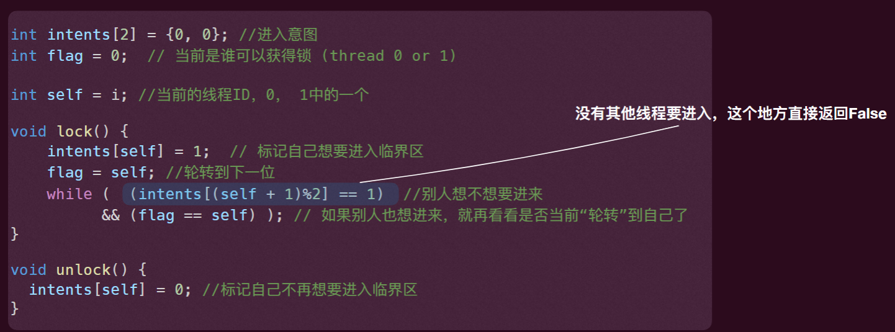

操作系统-04并发-互斥
临界区
临界区 critical section：访问共享资源的一段代码，资源通常是一个变量或数据结构
竞态条件 race condition：出现在多个执行线程大致同时进入临界区时，它们都试图更新共享的数据结构，导致非预期的结果
- 当程序含有一个或多个竞态条件，程序的输出会因运行而异，具体取决于哪些线程在何时运行，因此结果是不确定的 non-derministic
如何设计机制使得临界区避免出现竞态条件是“并发”的重要主题！
对于⼀个运行程序 (尤其是并发程序) 的两个重要属性：
- 安全性：“没有坏事发生”
- 要求执行中的任何有限步骤内都保持这个性质
- 活性：“好事终将发生”
- 要求只要在最终能满足要求即可，一个隐含的要求是执行中不能发生“不可挽回的步骤”
临界区的解决方案需满足的条件：
- 互斥 Mutual Exclusion：临界区中最多只能有一个线程 Safety
- 行进 Progress：如果当前临界区内没有线程，并且有线程想要进⼊临界区，那么最终某个想要进⼊临界区的线程会进⼊该临界区 (liveness)
- 有界等待 bounded waiting：如果某个线程想要进⼊临界区，那么其等待的期限有限（期间其他线程进⼊该临界区次数有上限），不可⼀直排队等待 (Fairness/No starvation)
除此之外，还应关心性能 performance:
- 进入和退出该临界区的两个操作应该相对于在该临界区内做的计算而言尽可能的小
经验法则 (Rule of thumb)
当设计并发算法时，优先考虑安全性！(but don’t forget liveness and performance).
锁 Locks
锁是⼀个变量，其保存了锁在某⼀时刻的状态。
- 要么是可用的（available，或 unlocked，或 free），表示没有线程持有锁
- 要么是被占用的（acquired，或 locked，或 held），表示有⼀个线程持有锁，正处于临界区。
其提供两个配对操作：
lock()/acquire(): 调用 lock() 或 acquire() 尝试获取锁，如果没有其他线程持有锁， 该线程会获得锁，进入临界区，否则 (该锁已经被持有了) 不会返回 (该线程会卡在那里)unlock()/release(): 调用 unlock() 或 release()，锁就变成可用了（可被获得）, 之前如果有因获得锁操作没成功卡在那的线程，那么其中⼀个会进入临界区
锁为程序员提供了最⼩程度的调度控制，通过给临界区加锁，保证临界区内只有⼀个活跃变量（互斥）。
尝试 1：关中断
题外话：NMI (Non-Maskable Interrupts)
不是所有中断都是可以被屏蔽的，处理器有不可屏蔽中断 (Non-Maskable Interrupts)
- 主要是为了一些不可处理或通知一些不可恢复的错误
- 如内部芯片系统错误、系统数据损坏等
- 如果操作系统的中断处理程序崩掉了（死循环），然后此时又在关中断，那么利用 NMI 可以监控这个错误，并给出处理（如重启计算机）
- 可行方法：设置硬件定时触发 NMI，操作系统（正常运行下）定时复位定时器以使得 NMI 不被触发，但操作系统⼀旦不正常了，timeout 会触发 NMI
问题：
- 临界区的代码死循环了->整个系统也卡死了
- 中断关闭时间过长会导致很多其他重要的外界响应丢失（比如错过了磁盘 I/O 的完成事件）
- 关中断是特权指令，用户态的应用是无法执行的，只有操作系统有这个权限
- 多处理器无效（单处理器是可行的）
- 每个处理器有独立的寄存器组
- 中断是每个处理器内部状态
尝试 2：通过软件 (Lock 标志)
使用⼀个标志来表达此时锁的状态，比如：为 1 就是已被占用，为 0 就是可用的。对应的 lock() 和 unlock()
——完全存在两个线程同时发现 flag 为 0，然后都进入临界区的可能 (not safe)
尝试 3：互斥的 test
- 在内存顺序一致性模型下成立
- 该方法让每个线程“严格轮转”
问题：一个线程能否得到一个锁完全依赖于另外一个线程是否先进入了临界区，违背了 liveness 性质
Peterson 算法
在标记后就将 flag 轮转到下一位，可以保证 flag==self 两个线程结果不一样
证明：
Peterson 算法能够保持互斥性
最后进入的一定是 T2，所以前一个状态是
两种前驱假设都不成立
- ： 也为 True，无法进入临界区
- ：T2 的 会将 flag 置为 1，不满足下一步的 flag=0
保持“行进”

保持“有界等待”
模型检测 Model checking
Model checking is a method for formally verifying finite-state systems
现实的 load 和 store 都不是原子的，甚至两个线程同⼀刻读的 flag 都不⼀致。 因此现实架构上的 peterson 算法其实是错误的。
刚刚的证明都基于 SC 的情况。
硬件支持的锁
1 | |
自旋锁的实现 Spin Lock